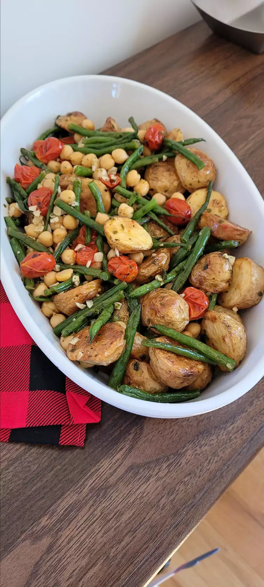

Vegan Green Bean, Tomato, and Basil Sheet Pan Dinner

Description
Toss together this quick and easy vegan sheet pan dinner of roasted baby potatoes, green beans, chickpeas, and tomatoes seasoned with basil.
Ingredients
- 2 cups baby potatoes
- 3 tablespoons olive oil, divided (Optional)
- 2 cups cherry tomatoes
- 2 cups 1-inch cut fresh green beans
- 4 cloves garlic, minced
- 2 teaspoons dried basil
- 1 teaspoon sea salt
- 2 teaspoons olive oil
- salt and ground black pepper to taste
Steps
- Preheat the oven to 425 degrees F (220 degrees C). Line a jelly roll pan with aluminum foil.
- Toss potatoes with 1 tablespoon olive oil in a medium bowl. Pour into the prepared pan.
- Roast in the preheated oven until tender, about 30 minutes.
- Toss cherry tomatoes, green beans, garlic, basil, and sea salt with 2 tablespoons olive oil.
- Remove potatoes from the oven, push them to one side of the pan, and add the tomato and green bean mixture. Roast until tomatoes start to wilt, 15 to 20 minutes more.
- Remove from the oven and pour into a serving dish. Stir in garbanzo beans, add 2 teaspoons olive oil, and season with salt and pepper.